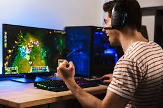

Si tras leer todo esto no sabes si debes gastarte el dinero en un buen ordenador gaming, vamos a intentar aclarar las dudas. En mi opinión, hay dos tipos de jugadores que pueden estar interesados en un pc gaming: los que quieren disfrutar de los gráficos y los que quieren ser competitivos en juegos PvP. Los mejores PC Gaming tienen que ver con brindarte una experiencia perfecta desde el momento en que abres la caja. Los ordenadores gaming se están volviendo cada vez más accesibles a través de la proliferación de PC preconstruidas y constructores de sistemas integrados (ISB) como Maingear y Origin, lo que reduce la barrera técnica para entrar en este pasatiempo que de otro modo sería imponente. Es esencial obtener el mejor pc para juegos que pueda pagar. Y a menos que Candy Crush encabece su lista de deseos en cuanto a juegos, probablemente necesitará algo de potencia de fuego para enfrentarse a los juegos más nuevos que le interesen. No solo los mejores pc gaming lo pueden llevar allí, sino que también deberían brindarle años de poder de juego viable.
